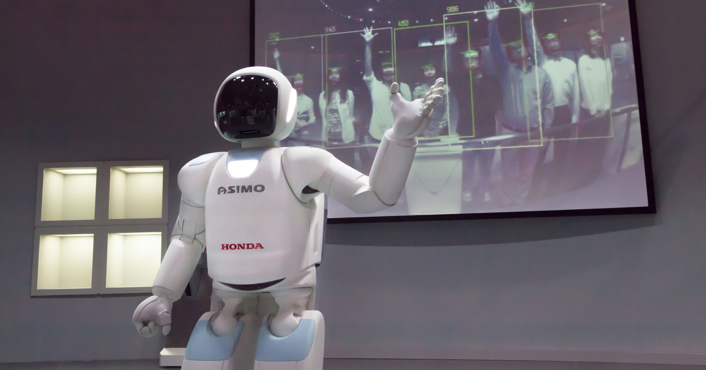
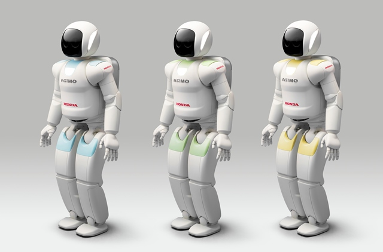

ASIMO
| 2000 | 2001 | 2002 | 2003 | 2004 | 2005 | 2007 | 2011 |
|---|
2011 (Version 3)

On November 8th, 2011, the third and last version of ASIMO was announced.
Variations
The only known color variations in use were gray and light blue.
However, there were other colors shown only in a concept image shared by Honda, green and yellow.
On March 17th, 2013, two prototypes were shown off during an NHK special called "Robot Revolution: Can Robots Surpass Humans?", each with different purposes.
The first prototype is an experimental humanoid robot based off of ASIMO 2011.[14] The kinematic configurations and major specifications are the same, but with the addition of one axis force sensors at the hip and both shoulders, as well as other changes that have no further detail.
The same prototype is seen in a video attached to a research paper released at the IEEE International Conference on Humanoid Robots 2017. The paper describes a method of recovering from being pushed.[14]
Both the video released by Honda Research and the video by NHK seem to show the same prototype recovering from the same type of pushes, released more than 4 years apart. During ASIMO 2011's first apperance in North American on April 19th, 2014, along with providing their versioning schema for their ASIMO models, Honda claimed that ASIMO Version 4 was in early development.[15] I believe that this "experimental humanoid robot based off of ASIMO 2011" could possibly be a very early prototype of ASIMO Version 4.
Now, the second prototype is more of a research platform for experimental technologies, such as traversing uneven terrain using a laser rangefinder array. It uses the same leg design as the first protype, but it looks to be a bit taller. The general design is very reminiscent of Honda E series robots.